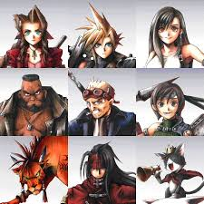
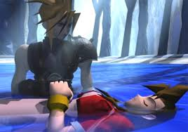

Mon perso préféré : Aerith Gainsborough

Aerith est une descendante des Cétras. Sa mère Ifalna est morte en essayant de
la mettre à l'abris.
Durant toute son enfance Aerith entend des voix sans savoir d'où elles viennent. Elle comprendra ce mystère l'année de
ses 22 ans, grâce à sa rencontre avec Clad.
Elle possède une limite break de guérison, très utile lors des combats.
Perso principal : Cloud Strife
Cloud est le personnage principal du jeu. Mercenaire taciturne au début du jeu, il se présente
comme un ex-SOLDAT de première classe.
L’histoire commence lorsque Cloud rejoint le groupe éco-terroriste AVALANCHE basé à Midgar,
une vaste cité industrielle. Le groupe se compose entre autres de Tifa, une amie d’enfance de Cloud
et de Barret, leur chef.
AVALANCHE lutte contre la Shinra, une multi-nationale qui produit de l’énergie Mako en prélevant
l’énergie spirituelle de la Rivière de la vie des entrailles de la planète Gaïa.
Cloud prend la tête d'Avalanche et le jeu commence !
Les persos principaux

Aeris est une jeune marchande de fleurs vivant dans les taudis de Midgar, poursuivie depuis
qu’elle est petite par la Shinra.
Cloud Strife est le personnage principal du jeu, il prend rapidement la tête d'Avalanche.
Tifa Lockheart est une spécialiste en arts martiaux, amie d’enfance de Cloud, auquel elle est
très attachée.
Barret Wallace est le chef impulsif de la seconde incarnation d’AVALANCHE, une organisation anti-Shinra.
Cid Highwind est un pilote d’aéronef qui rêve d’être le premier homme à partir dans l’espace.
Yuffie Kisaragi, une jeune ninja originaire de Utai.
Nanaki (Red XIII) est une sorte de fauve doué de parole, anciennement sujet d’expériences pour des
scientifiques de la Shinra.
Vincent Valentine, ex-membre de l’unité spéciale des Turks qui a été tué et ramené à la vie en tant
que sujet de recherche.
Cait Sith est un chat diseur de bonne aventure, personnage à l’aspect loufoque, il chevauche en permanence un énorme mog en peluche.
Le moment le plus triste du jeu :(

Après avoir poursuivi Séphiroth pendant des jours, la team se retrouve dans un village oublié.
Relachant leur vigilance un instant, ils ne voient pas Séphiroth arriver. Ce dernier transperce Aerith de son épée...
C'est le moment le plus triste du jeu, mais également le plus imcompréhensible...
Comment les concepteurs ont-ils pu faire mourir Aerith !?!